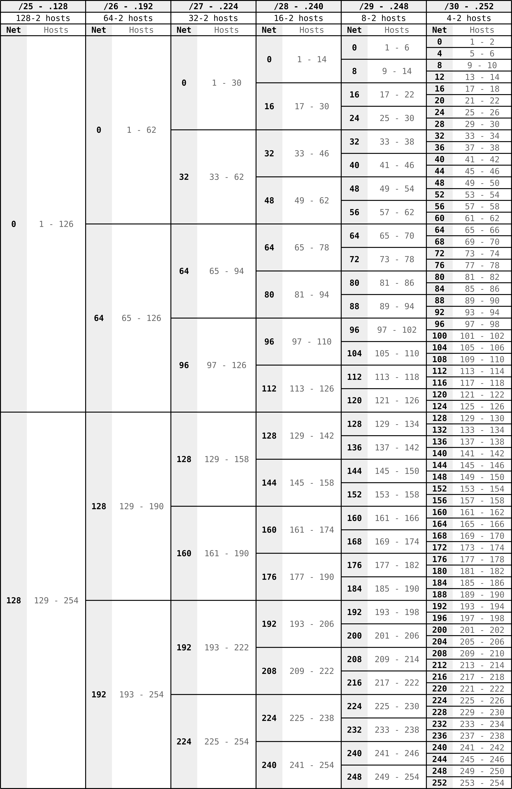

IPv4¶
Internet Protocol version 4.
- Va sobre Ethernet o PPPoE.
- Tiene direcciones de 32 bits.
Header¶
- Version (4 bits): Siempre es 4.
- Internet Header Lengtn (IHL) (4 bits): Cantidad de palabras de 32 bits en el header, si no hay opciones es 5, que equivale a 20 bytes.
- Differentiated Services Code Point (DSCP) (6 bits): Tipo de servicio, usado para QoS.
- Explicit Congestion Notification (ECN) (2 bits): Se usa poco, indica que hay congestión en la red.
- Total Length (16 bits): Largo del header y datos en bytes.
- Identification (16 bits): Identifican un grupo de paquetes al fragmentar.
- Flags (3 bits): El bit 2 indica que vienen más fragmentos, el bit 1 indica que no se debe fragmentar este paquete, el bit 0 no se usa.
- Fragment offset (13 bits): Especifica el offset de este fragmento en particular, cuenta de a 8 bytes.
- Time to live (TTL) (8 bits): Cantidad de saltos hasta que el paquete se descarte, disminuye en cada salto.
- Protocol (8 bits): Identifica al protocolo encapsulado.
- Header checksum (16 bits): Checksum del header, cada vez que un router disminuye el TTL debe recalcular este checksum, esto es ineficiente.
- Source address (32 bits): IP de origen.
- Destination address (32 bits): IP de destino.
- Options (variable): Opciones que no se usan normalmente, se debe hacer un padding para que sea múltiplo de 32 bits.
Asignación¶
- La mitad superior del espacio de direcciones de clase A se reserva indefinidamente para tener la posibilidad de usarlo en la transición a un nuevo sistema de numeración.
- Las redes de clase B sólo se asignan a organizaciones que puedan probar claramente que las necesitan.
- Los requerimientos para las redes de clase B son que la organización
solicitante:
- Tenga un esquema de subnetting con más de 32 subredes dentro de su red operativa.
- Tenga más de 4096 hosts.
- A las organizaciones que no satisfacen los requerimientos para una red de clase B se les asigna un bloque de redes clase C numeradas consecutivamente, para que se pueda hacer supernetting y rutear a todas juntas.
- La mitad inferior del espacio de direcciones de clase C (números de red del
192.0.0 al 223.255.245) se divide en 8 bloques que separa las autoridades
regionales. Están reservadas del siguiente modo:
- 192.0.0 - 193.255.255: Multiregional.
- 194.0.0 - 195.255.255: Europa.
- 196.0.0 - 197.255.255: Otros.
- 198.0.0 - 199.255.255: Norte América.
- 200.0.0 - 201.255.255: Centro y Sudamérica.
- 202.0.0 - 203.255.255: Borde del Pacífico.
- 204.0.0 - 205.255.255: Otros.
- 206.0.0 - 207.255.255: Otros.
- La mitad superior del espacio de direcciones de clase C(208.0.0 a 223.255.255) permanece sin asignar y sin reservar.
Tipos de direcciones¶
Clases¶
- A:
- Comienzan con:
0b0 - Redes: 0.0.0.0 - 127.0.0.0
- Redes privadas: 10.0.0.0
- Numero de hosts: 2^24 - 2
- Comienzan con:
- B:
- Comienzan con:
0b10 - Redes: 128.0.0.0 - 191.255.0.0
- Redes privadas: 172.16.0.0 - 172.31.0.0
- Numero de hosts: 2^16 - 2
- Comienzan con:
- C:
- Comienzan con:
0b110 - Redes: 192.0.0.0 - 255.255.255.0
- Redes privadas: 192.168.0.0 - 192.168.255.0
- Numero de hosts: 2^8 - 2
- Comienzan con:
- D (multicast):
- Redes: 224.0.0.0 - 239.255.255.0
- E (reservado):
- Redes: 240.0.0.0 - 255.255.255.255
Redes privadas¶
- Clase A: 10.0.0.0
- Clase B: 172.16.0.0 - 172.31.0.0
- Clase C: 192.168.0.0 - 192.168.255.0
Redes reservadas¶
Estas son algunas pero hay más.
- 0.0.0.0 - 0.255.255.255: Para representar la red actual.
- 127.0.0.0 - 127.255.255.255: Para loopback.
- 169.254.0.0 - 169.254.255.255: para link-local.
- 192.0.2.0 - 192.0.2.255: TEST-NET-1, Para documentación y ejemplos.
- 198.51.100.0 - 198.51.100.255: TEST-NET-2, Para documentación y ejemplos.
- 203.0.113.0 - 203.0.113.255: TEST-NET-3, Para documentación y ejemplos.
VLSM y CIDR¶
Son VLSM (Variable Length Subnet Mask) y CIDR (Classless Inter-Domain Routing) reemplazan a la división de redes por clases y permiten crear redes con cualquier máscara de red. Los dos son mas o menos lo mismo pero técnicamente:
- CIDR: Permite que que las direcciones dadas por la IANA no estén limitadas a ser clase A, B o C sino que tengan cualquier mascara.
- VLSM: Es una estrategia para subdividir una red en varias más chicas usando CIDR.
Los profes dicen que si uno agarra por ejemplo una /16, si se corre la máscara a la izquierda es CIDR/Supernetting, si se corre a la derecha es VLSM/Subnetting.
Carta de ayuda para hacer VLSM:
Máscaras comunes¶
/32: Se usa por ejemplo para publicar direcciones de loopback por medio de algún protocolo de ruteo dinámico. Solamente tiene un host, no tiene dirección de red ni de broadcast./31: Tiene dos direcciones de host, no tiene dirección de red ni de broadcast. Es útil para enlaces punto a punto en WAN pero no muy usado. Ver RFC-2021./30: Tiene dos direcciones de host, una para la red y una para broadcast. Es lo más usado para enlaces punto a punto en WAN.
Fragmentación¶
Enviando PING con tamaño 6000 usando ping 192.168.1.6 -s 6000:
1514 Fragmented IP protocol (proto=ICMP 1, off=0, ID=3247) [Reassembled in #67]
1514 Fragmented IP protocol (proto=ICMP 1, off=1480, ID=3247) [Reassembled in #67]
1514 Fragmented IP protocol (proto=ICMP 1, off=2960, ID=3247) [Reassembled in #67]
1514 Fragmented IP protocol (proto=ICMP 1, off=4440, ID=3247) [Reassembled in #67]
122 Echo (ping) reply id=0x095b, seq=13/3328, ttl=64 (request in 62)
Se partió en 5 fragmentos. Header IP de cada fragmento:
Internet Protocol Version 4, Src: 192.168.1.6, Dst: 192.168.1.16
Total Length: 1500
Identification: 0x3247 (12871)
Flags: 0x01 (More Fragments)
Fragment offset: 0
Internet Protocol Version 4, Src: 192.168.1.6, Dst: 192.168.1.16
Total Length: 1500
Identification: 0x3247 (12871)
Flags: 0x01 (More Fragments)
Fragment offset: 1480
Internet Protocol Version 4, Src: 192.168.1.6, Dst: 192.168.1.16
Total Length: 1500
Identification: 0x3247 (12871)
Flags: 0x01 (More Fragments)
Fragment offset: 2960
Internet Protocol Version 4, Src: 192.168.1.6, Dst: 192.168.1.16
Total Length: 1500
Identification: 0x3247 (12871)
Flags: 0x01 (More Fragments)
Fragment offset: 4440
Internet Protocol Version 4, Src: 192.168.1.6, Dst: 192.168.1.16
Total Length: 108
Identification: 0x3247 (12871)
Flags: 0x00
Fragment offset: 5920
Al hacer ping grande sin fragmentar me dice error en la terminal en donde hago
ping con ping 192.168.1.6 -s 6000 -M do:
ping: local error: Message too long, mtu=1500
Traceroute¶
Al hacer sudo traceroute --icmp 8.8.8.8:
traceroute to 8.8.8.8 (8.8.8.8), 30 hops max, 60 byte packets
1 192.168.66.1 (192.168.66.1) 0.242 ms 0.277 ms 0.328 ms
2 * * *
3 gw.unrc.edu.ar (200.7.141.2) 0.871 ms 0.894 ms 0.901 ms
4 10.7.1.1 (10.7.1.1) 0.943 ms 1.588 ms 1.607 ms
5 host173.181-15-2.telecom.net.ar (181.15.2.173) 16.401 ms 16.408 ms 16.412 ms
6 host232.181-88-65.telecom.net.ar (181.88.65.232) 16.338 ms 16.390 ms 16.341 ms
7 host217.181-88-145.telecom.net.ar (181.88.145.217) 24.711 ms 24.737 ms 24.737 ms
8 host158.181-88-80.telecom.net.ar (181.88.80.158) 32.513 ms 32.536 ms 32.541 ms
9 host114.190-224-165.telecom.net.ar (190.224.165.114) 26.148 ms 28.284 ms 28.302 ms
10 72.14.217.180 (72.14.217.180) 26.516 ms 26.539 ms 26.419 ms
11 108.170.248.241 (108.170.248.241) 26.386 ms 26.616 ms 26.628 ms
12 108.170.227.7 (108.170.227.7) 31.107 ms 29.525 ms 29.550 ms
13 google-public-dns-a.google.com (8.8.8.8) 24.699 ms 24.477 ms 24.538 ms
192.168.1.16 8.8.8.8 ICMP 74 Echo (ping) request id=0x57fa, seq=1/256, ttl=1 (no response found!)
192.168.1.16 8.8.8.8 ICMP 74 Echo (ping) request id=0x57fa, seq=2/512, ttl=1 (no response found!)
192.168.1.16 8.8.8.8 ICMP 74 Echo (ping) request id=0x57fa, seq=3/768, ttl=1 (no response found!)
192.168.1.16 8.8.8.8 ICMP 74 Echo (ping) request id=0x57fa, seq=4/1024, ttl=2 (no response found!)
192.168.1.16 8.8.8.8 ICMP 74 Echo (ping) request id=0x57fa, seq=5/1280, ttl=2 (no response found!)
192.168.1.16 8.8.8.8 ICMP 74 Echo (ping) request id=0x57fa, seq=6/1536, ttl=2 (no response found!)
192.168.1.16 8.8.8.8 ICMP 74 Echo (ping) request id=0x57fa, seq=7/1792, ttl=3 (no response found!)
192.168.1.16 8.8.8.8 ICMP 74 Echo (ping) request id=0x57fa, seq=8/2048, ttl=3 (no response found!)
192.168.1.16 8.8.8.8 ICMP 74 Echo (ping) request id=0x57fa, seq=9/2304, ttl=3 (no response found!)
192.168.1.16 8.8.8.8 ICMP 74 Echo (ping) request id=0x57fa, seq=10/2560, ttl=4 (no response found!)
192.168.1.16 8.8.8.8 ICMP 74 Echo (ping) request id=0x57fa, seq=11/2816, ttl=4 (no response found!)
192.168.1.16 8.8.8.8 ICMP 74 Echo (ping) request id=0x57fa, seq=12/3072, ttl=4 (no response found!)
192.168.1.16 8.8.8.8 ICMP 74 Echo (ping) request id=0x57fa, seq=13/3328, ttl=5 (no response found!)
192.168.1.16 8.8.8.8 ICMP 74 Echo (ping) request id=0x57fa, seq=14/3584, ttl=5 (no response found!)
192.168.1.16 8.8.8.8 ICMP 74 Echo (ping) request id=0x57fa, seq=15/3840, ttl=5 (no response found!)
192.168.1.16 8.8.8.8 ICMP 74 Echo (ping) request id=0x57fa, seq=16/4096, ttl=6 (no response found!)
192.168.66.1 192.168.1.16 ICMP 102 Time-to-live exceeded (Time to live exceeded in transit)
192.168.66.1 192.168.1.16 ICMP 102 Time-to-live exceeded (Time to live exceeded in transit)
192.168.66.1 192.168.1.16 ICMP 102 Time-to-live exceeded (Time to live exceeded in transit)
200.7.141.2 192.168.1.16 ICMP 102 Time-to-live exceeded (Time to live exceeded in transit)
200.7.141.2 192.168.1.16 ICMP 102 Time-to-live exceeded (Time to live exceeded in transit)
200.7.141.2 192.168.1.16 ICMP 102 Time-to-live exceeded (Time to live exceeded in transit)
10.7.1.1 192.168.1.16 ICMP 102 Time-to-live exceeded (Time to live exceeded in transit)
10.7.1.1 192.168.1.16 ICMP 102 Time-to-live exceeded (Time to live exceeded in transit)
10.7.1.1 192.168.1.16 ICMP 102 Time-to-live exceeded (Time to live exceeded in transit)
192.168.1.16 8.8.8.8 ICMP 74 Echo (ping) request id=0x57fa, seq=17/4352, ttl=6 (no response found!)
192.168.1.16 8.8.8.8 ICMP 74 Echo (ping) request id=0x57fa, seq=18/4608, ttl=6 (no response found!)
192.168.1.16 8.8.8.8 ICMP 74 Echo (ping) request id=0x57fa, seq=19/4864, ttl=7 (no response found!)
192.168.1.16 8.8.8.8 ICMP 74 Echo (ping) request id=0x57fa, seq=20/5120, ttl=7 (no response found!)
192.168.1.16 8.8.8.8 ICMP 74 Echo (ping) request id=0x57fa, seq=21/5376, ttl=7 (no response found!)
192.168.1.16 8.8.8.8 ICMP 74 Echo (ping) request id=0x57fa, seq=22/5632, ttl=8 (no response found!)
192.168.1.16 8.8.8.8 ICMP 74 Echo (ping) request id=0x57fa, seq=23/5888, ttl=8 (no response found!)
192.168.1.16 8.8.8.8 ICMP 74 Echo (ping) request id=0x57fa, seq=24/6144, ttl=8 (no response found!)
192.168.1.16 8.8.8.8 ICMP 74 Echo (ping) request id=0x57fa, seq=25/6400, ttl=9 (no response found!)
181.88.65.232 192.168.1.16 ICMP 110 Time-to-live exceeded (Time to live exceeded in transit)
181.15.2.173 192.168.1.16 ICMP 110 Time-to-live exceeded (Time to live exceeded in transit)
181.15.2.173 192.168.1.16 ICMP 110 Time-to-live exceeded (Time to live exceeded in transit)
181.15.2.173 192.168.1.16 ICMP 110 Time-to-live exceeded (Time to live exceeded in transit)
192.168.1.16 8.8.8.8 ICMP 74 Echo (ping) request id=0x57fa, seq=26/6656, ttl=9 (no response found!)
192.168.1.16 8.8.8.8 ICMP 74 Echo (ping) request id=0x57fa, seq=27/6912, ttl=9 (no response found!)
192.168.1.16 8.8.8.8 ICMP 74 Echo (ping) request id=0x57fa, seq=28/7168, ttl=10 (no response found!)
192.168.1.16 8.8.8.8 ICMP 74 Echo (ping) request id=0x57fa, seq=29/7424, ttl=10 (no response found!)
181.88.65.232 192.168.1.16 ICMP 110 Time-to-live exceeded (Time to live exceeded in transit)
181.88.65.232 192.168.1.16 ICMP 110 Time-to-live exceeded (Time to live exceeded in transit)
192.168.1.16 8.8.8.8 ICMP 74 Echo (ping) request id=0x57fa, seq=30/7680, ttl=10 (no response found!)
192.168.1.16 8.8.8.8 ICMP 74 Echo (ping) request id=0x57fa, seq=31/7936, ttl=11 (no response found!)
192.168.1.16 8.8.8.8 ICMP 74 Echo (ping) request id=0x57fa, seq=32/8192, ttl=11 (no response found!)
192.168.1.16 8.8.8.8 ICMP 74 Echo (ping) request id=0x57fa, seq=33/8448, ttl=11 (no response found!)
192.168.1.16 8.8.8.8 ICMP 74 Echo (ping) request id=0x57fa, seq=34/8704, ttl=12 (no response found!)
181.88.145.217 192.168.1.16 ICMP 110 Time-to-live exceeded (Time to live exceeded in transit)
181.88.145.217 192.168.1.16 ICMP 110 Time-to-live exceeded (Time to live exceeded in transit)
181.88.145.217 192.168.1.16 ICMP 110 Time-to-live exceeded (Time to live exceeded in transit)
192.168.1.16 8.8.8.8 ICMP 74 Echo (ping) request id=0x57fa, seq=35/8960, ttl=12 (no response found!)
192.168.1.16 8.8.8.8 ICMP 74 Echo (ping) request id=0x57fa, seq=36/9216, ttl=12 (no response found!)
192.168.1.16 8.8.8.8 ICMP 74 Echo (ping) request id=0x57fa, seq=37/9472, ttl=13 (reply in 116)
190.224.165.114 192.168.1.16 ICMP 110 Time-to-live exceeded (Time to live exceeded in transit)
192.168.1.16 8.8.8.8 ICMP 74 Echo (ping) request id=0x57fa, seq=38/9728, ttl=13 (reply in 117)
181.88.80.158 192.168.1.16 ICMP 110 Time-to-live exceeded (Time to live exceeded in transit)
181.88.80.158 192.168.1.16 ICMP 110 Time-to-live exceeded (Time to live exceeded in transit)
181.88.80.158 192.168.1.16 ICMP 110 Time-to-live exceeded (Time to live exceeded in transit)
192.168.1.16 8.8.8.8 ICMP 74 Echo (ping) request id=0x57fa, seq=39/9984, ttl=13 (reply in 122)
192.168.1.16 8.8.8.8 ICMP 74 Echo (ping) request id=0x57fa, seq=40/10240, ttl=14 (reply in 123)
192.168.1.16 8.8.8.8 ICMP 74 Echo (ping) request id=0x57fa, seq=41/10496, ttl=14 (reply in 124)
72.14.217.180 192.168.1.16 ICMP 70 Time-to-live exceeded (Time to live exceeded in transit)
72.14.217.180 192.168.1.16 ICMP 70 Time-to-live exceeded (Time to live exceeded in transit)
192.168.1.16 8.8.8.8 ICMP 74 Echo (ping) request id=0x57fa, seq=42/10752, ttl=14 (reply in 125)
192.168.1.16 8.8.8.8 ICMP 74 Echo (ping) request id=0x57fa, seq=43/11008, ttl=15 (reply in 126)
190.224.165.114 192.168.1.16 ICMP 110 Time-to-live exceeded (Time to live exceeded in transit)
190.224.165.114 192.168.1.16 ICMP 110 Time-to-live exceeded (Time to live exceeded in transit)
108.170.248.241 192.168.1.16 ICMP 102 Time-to-live exceeded (Time to live exceeded in transit)
72.14.217.180 192.168.1.16 ICMP 70 Time-to-live exceeded (Time to live exceeded in transit)
192.168.1.16 8.8.8.8 ICMP 74 Echo (ping) request id=0x57fa, seq=44/11264, ttl=15 (reply in 127)
192.168.1.16 8.8.8.8 ICMP 74 Echo (ping) request id=0x57fa, seq=45/11520, ttl=15 (reply in 128)
192.168.1.16 8.8.8.8 ICMP 74 Echo (ping) request id=0x57fa, seq=46/11776, ttl=16 (reply in 129)
192.168.1.16 8.8.8.8 ICMP 74 Echo (ping) request id=0x57fa, seq=47/12032, ttl=16 (reply in 130)
108.170.248.241 192.168.1.16 ICMP 102 Time-to-live exceeded (Time to live exceeded in transit)
108.170.248.241 192.168.1.16 ICMP 102 Time-to-live exceeded (Time to live exceeded in transit)
192.168.1.16 8.8.8.8 ICMP 74 Echo (ping) request id=0x57fa, seq=48/12288, ttl=16 (reply in 131)
192.168.1.16 8.8.8.8 ICMP 74 Echo (ping) request id=0x57fa, seq=49/12544, ttl=17 (reply in 132)
8.8.8.8 192.168.1.16 ICMP 74 Echo (ping) reply id=0x57fa, seq=37/9472, ttl=51 (request in 83)
8.8.8.8 192.168.1.16 ICMP 74 Echo (ping) reply id=0x57fa, seq=38/9728, ttl=51 (request in 85)
108.170.227.7 192.168.1.16 ICMP 70 Time-to-live exceeded (Time to live exceeded in transit)
108.170.227.7 192.168.1.16 ICMP 70 Time-to-live exceeded (Time to live exceeded in transit)
108.170.227.7 192.168.1.16 ICMP 70 Time-to-live exceeded (Time to live exceeded in transit)
8.8.8.8 192.168.1.16 ICMP 74 Echo (ping) reply id=0x57fa, seq=39/9984, ttl=51 (request in 93)
8.8.8.8 192.168.1.16 ICMP 74 Echo (ping) reply id=0x57fa, seq=40/10240, ttl=51 (request in 94)
8.8.8.8 192.168.1.16 ICMP 74 Echo (ping) reply id=0x57fa, seq=41/10496, ttl=51 (request in 95)
8.8.8.8 192.168.1.16 ICMP 74 Echo (ping) reply id=0x57fa, seq=42/10752, ttl=51 (request in 98)
8.8.8.8 192.168.1.16 ICMP 74 Echo (ping) reply id=0x57fa, seq=43/11008, ttl=51 (request in 99)
8.8.8.8 192.168.1.16 ICMP 74 Echo (ping) reply id=0x57fa, seq=44/11264, ttl=51 (request in 106)
8.8.8.8 192.168.1.16 ICMP 74 Echo (ping) reply id=0x57fa, seq=45/11520, ttl=51 (request in 107)
8.8.8.8 192.168.1.16 ICMP 74 Echo (ping) reply id=0x57fa, seq=46/11776, ttl=51 (request in 108)
8.8.8.8 192.168.1.16 ICMP 74 Echo (ping) reply id=0x57fa, seq=47/12032, ttl=51 (request in 111)
8.8.8.8 192.168.1.16 ICMP 74 Echo (ping) reply id=0x57fa, seq=48/12288, ttl=51 (request in 114)
8.8.8.8 192.168.1.16 ICMP 74 Echo (ping) reply id=0x57fa, seq=49/12544, ttl=51 (request in 115)